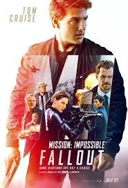
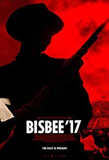
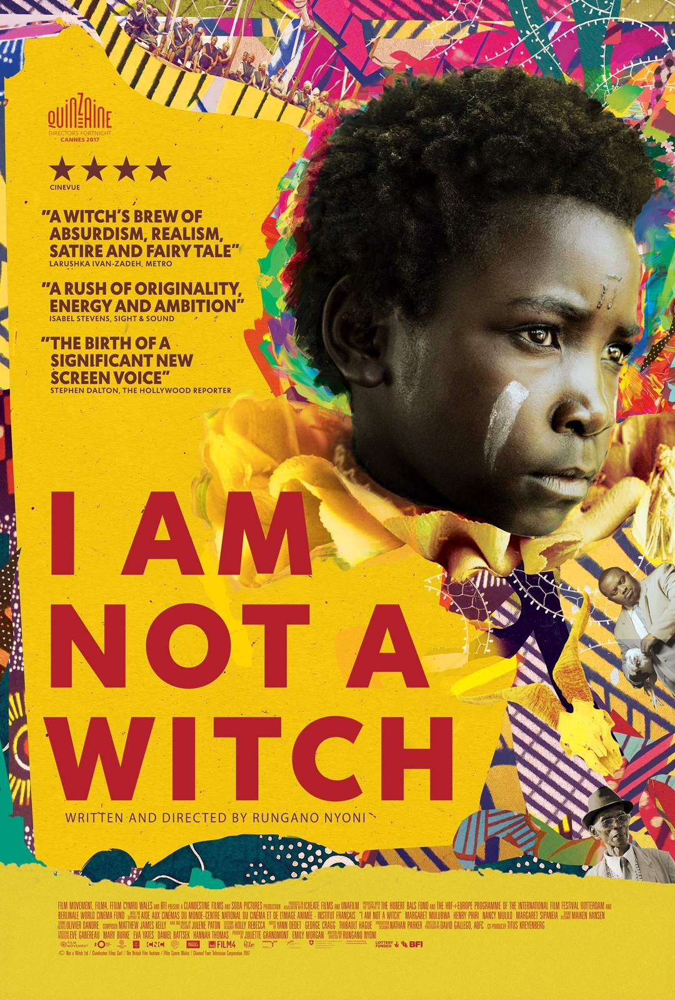

At last, I graduated…….Now thermometer is not the only thing in the world having degrees without brains A Nomad in search for the perfect burger. Do not judge me before you know me, but just to inform you, you won’t like me I am not on Instagram. Go do something useful. The best of me is yet to come Can bob the builder fix my bad attitude? Professional procrastinator That awkward moment when fails to recognize your own photo on the Instagram. Don’t think of yourself as an ugly person, think of yourself as a beautiful monkey. I am not a player…I’m the game.
|  |
Mission: Impossible – FalloutTom Cruise risks life and limb—literally, in many instances—for his sixth go-round as Ethan Hunt in Mission: Impossible – Fallout, the finest action film since 2015’s Mad Max: Fury Road. In writer-director Christopher McQuarrie’s adrenalized espionage thriller, Hunt is tasked with recovering a trio of plutonium cores while juggling his relationships with colleagues (Simon Pegg, Ving Rhames, Alec Baldwin), alluring spy Ilsa Faust (Rebecca Ferguson), and former wife Julia (Michelle Monaghan)—not to mention CIA-assigned assassin August Walker (Henry Cavill), who has orders to kill Hunt should he stray from his assignment. That intertwining of the personal and professional provides a sturdy backbone for a series of set pieces that, especially in IMAX, are nothing short of astonishing. McQuarrie begins with a slam-bang bathroom brawl and then continually ups the eye-opening ante, culminating with an aerial showdown between Hunt and Walker aboard helicopters that establishes Cruise, and the series, as the reigning kings of Hollywood spectacle. |
|  |
Bisbee ’17In 1917, the sheriff of Bisbee, Arizona—a remote mountain-nestled enclave then known for its wealth of copper—rounded up the town’s striking German and Mexican miners and, with the aid of a 2,000-man posse, took them out to the desert and left them there, never to be seen or thought about again. Robert Greene’s daring and dexterous Bisbee ’17 refuses to consign those unjustly persecuted victims to the forgotten realms of history, instead using traditional documentary footage and dramatic reenactments—often taking the surprising form of musical numbers—to revisit that calamitous event. As in his prior Actress and Kate Plays Christine, Greene’s blending of fiction and non-fiction techniques is accomplished, and results in an insightful investigation into race relations, class conflicts, and the nature of memory. A mournful ghost story that doubles as an act of resurrection and reclamation, it’s a saga about past crimes with undeniable present relevance. |
|  |
I Am Not a WitchIn Zambia, women are still accused of being witches—and then sent to live in camps, forced to perform manual labor, and (most stunning of all) compelled to preside over criminal trials, where they’re supposed to use their supernatural powers to make judgments. This insane real-life scenario is brought to bleakly satiric life by I Am Not a Witch, Rungano Nyoni’s directorial debut about a young girl dubbed Shula (Maggie Mulubwa) whose world is turned upside-down after authorities determine she’s a witch. Under the guidance of government official Mr. Banda (Henry B.J. Phiri), Shula embarks on an odyssey that’s littered with indignities and absurdities, including appearing on a TV talk show where she’s asked to hawk magic “Shula eggs” to the audience like an infomercial huckster. Set to an eclectic score (sharp strings, harsh noise) that’s sometimes at odds with the action, Nyoni’s drama—playing like a droll, horrifying 21st century riff on The Crucible—is a startlingly inventive story about modern institutionalized misogyny. |